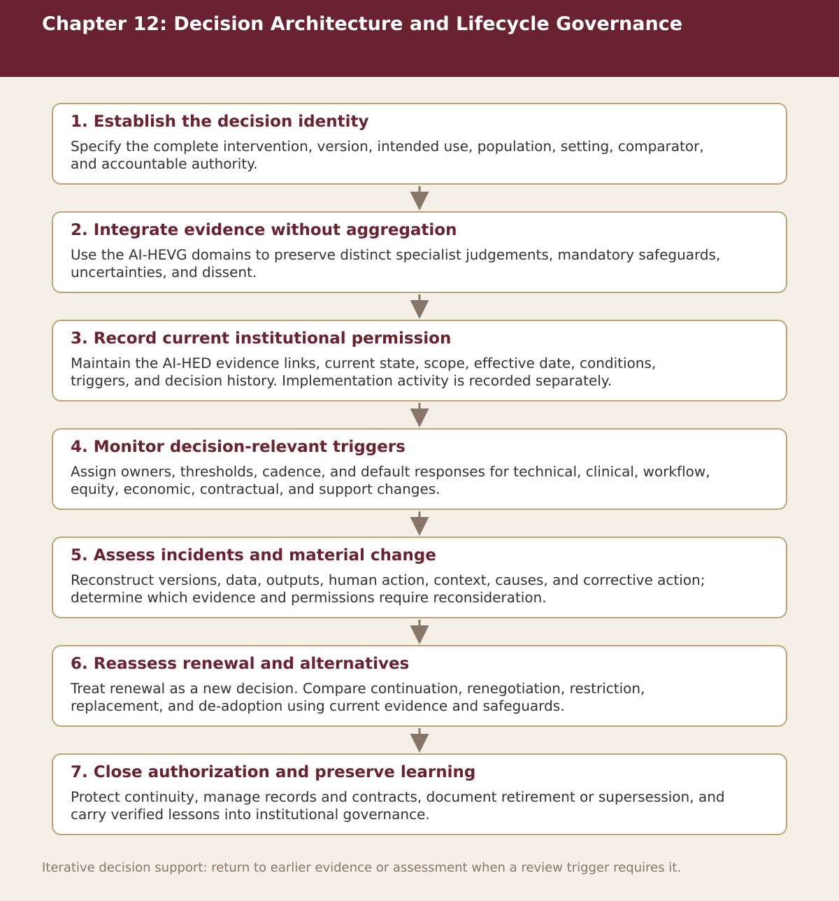

Chapter 12
Decision Architecture and Lifecycle Governance
Chapter-level process map linking the chapter’s decision questions to the companion resources and decision gates.

Process steps
| Step | Stage | Purpose | Required Input | Expected Output | Decision Or Gate |
|---|---|---|---|---|---|
| 1 | Open and maintain the lifecycle dossier | Record the problem, evidence, economics, governance, implementation, monitoring, changes, and decision status. | Local evidence and the prior approved step | Versioned record for: Open and maintain the lifecycle dossier | Proceed, revise, escalate, restrict, or stop as appropriate |
| 2 | Apply stage gates | Require proportionate evidence before procurement, silent validation, pilot, scale, or institutional dependence. | Local evidence and the prior approved step | Versioned record for: Apply stage gates | Proceed, revise, escalate, restrict, or stop as appropriate |
| 3 | Implement through controlled validation | Verify readiness, train users, validate locally, test fallback, and define acceptance criteria. | Local evidence and the prior approved step | Versioned record for: Implement through controlled validation | Proceed, revise, escalate, restrict, or stop as appropriate |
| 4 | Operate algorithmovigilance | Review technical, clinical, workflow, workforce, equity, economic, contractual, and trust indicators at defined intervals. | Local evidence and the prior approved step | Versioned record for: Operate algorithmovigilance | Proceed, revise, escalate, restrict, or stop as appropriate |
| 5 | Investigate incidents and material changes | Preserve data, versions, outputs, human actions, context, causes, corrective action, and revalidation. | Local evidence and the prior approved step | Versioned record for: Investigate incidents and material changes | Proceed, revise, escalate, restrict, or stop as appropriate |
| 6 | Renew, restrict, replace, or de-adopt | Compare current value, safeguards, alternatives, continuity, and exit readiness. | Local evidence and the prior approved step | Versioned record for: Renew, restrict, replace, or de-adopt | Proceed, revise, escalate, restrict, or stop as appropriate |
| 7 | Feed lessons into portfolio governance | Update policy, capability, procurement, training, standards, and strategic priorities. | Local evidence and the prior approved step | Versioned record for: Feed lessons into portfolio governance | Proceed, revise, escalate, restrict, or stop as appropriate |